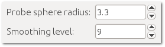
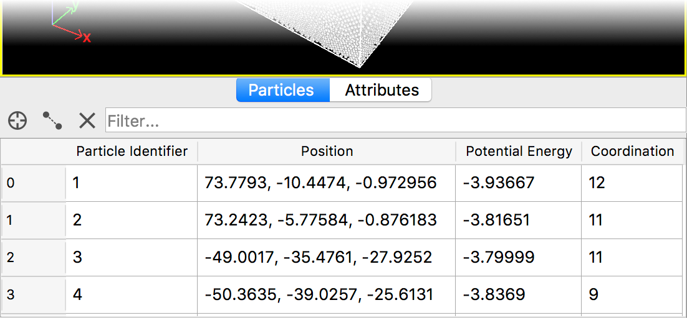

Miscellaneous
The following sections briefly introduce various useful functions and features of the program in arbitrary order.
Saving the session state
You can save the current program session, including the data pipeline, viewports, render settings, etc., to a .ovito state file
(main menu: ). This allows you
to preserve the current visualization setup and data pipeline for future use. For instance, you can use a state file as a template to
visualize several simulations using the same data analysis pipeline and camera setup.
Spinner controls
{kind=link}
A spinner widget is a user interface element used throughout the program for editing numerical parameters (see screenshot on the right). Here is how you use the spinner widget to vary the parameter value: (1) Click the spinner’s up arrow once to increment the value; click the down arrow to decrement the value in a stepwise manner. (2) Alternatively, click and hold down the mouse button to vary the value continuously. Drag the cursor upward/downward to increase/decrease the parameter value.
Data inspector
{kind=link}
The Data Inspector is a panel that is located right below the viewport area in OVITO’s main window. It can be opened as shown in the screenshot on the right by clicking on the tab bar. The data inspector consists of several tabs that show different fragments of the current dataset, e.g. the property values of all particles. The tool also lets you measure distances between pairs of particles.
Viewport layers
Viewport layers are a way to superimpose additional information and graphics such as text labels, color legends, and coordinate tripods on top of the rendered image of the three-dimensional scene. OVITO offers several different layer types, which may be added to a viewport from the Viewport Layers tab of the command panel.
Modifier templates
When working with OVITO on a regular basis, you may find yourself using the same modifiers again and again. Some modifiers are often used in the same combination to accomplish specific analysis, filter, or visualization tasks. To make your life easier and save you from repetitive work, OVITO allows you to define so-called modifier templates. These are preconfigured modifiers or combinations of modifiers that can be inserted into the data pipeline with just a single click. See this section to learn more about this program feature.
Python scripting pro
OVITO Pro provides a scripting interface that lets you automate analysis and visualization tasks. This can be useful, for example, when a large number of input files needs to be batch-processed. The scripting interface provides programmatic access to most program features such as simulation data input and output, modifiers, and rendering of images and movies.
Scripts for OVITO Pro are written in the Python 3 programming language. The OVITO Python API is described in the scripting reference manual, which is also accessible from the help menu of OVITO.
In addition to automating workflows, the scripting interface allows you to extend the OVITO Pro desktop application. For example, the Python script modifier provides a mechanism for you to write your own data manipulation functions and integrate them into OVITO’s modification pipeline system. Furthermore, the Python script viewport layer lets you write a Python function that adds arbitrary 2D graphics on top of rendered images and enrich the visualization with additional information such as a scale bar.